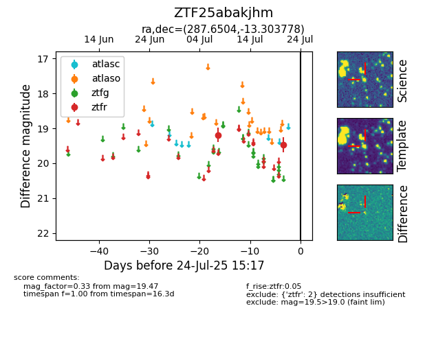

Target ZTF25abakjhm at 2025-07-24 15:17, see:
FINK: fink-portal.org/ZTF25abakjhm
Lasair: lasair-ztf.lsst.ac.uk/objects/ZTF25abakjhm
ALeRCE: alerce.online/object/ZTF25abakjhm
alt names
ZTF25abakjhm (ztf,fink)
coordinates:
equatorial (ra, dec) = (287.6504,-13.30378)
galactic (l, b) = (23.1188,-10.21051)
photometry
last ztfr=19.47
2 ztfr detections
